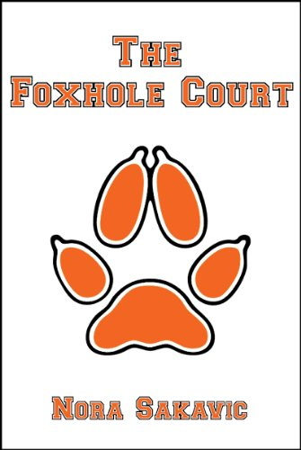
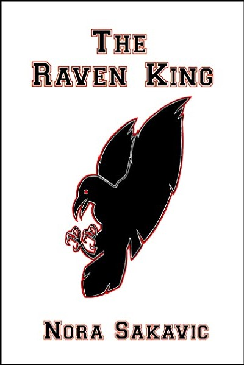
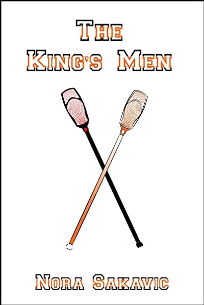

The Foxhole Court (book)
The first book of the All For the Game series by Nora Sakavic
Blurb
Neil Josten is the newest addition to the Palmetto State University Exy team. He's short, he's fast, he's got a ton of potential—and he's the runaway son of the murderous crime lord known as The Butcher.
Signing a contract with the PSU Foxes is the last thing someone like Neil should do. The team is high profile, and he doesn't need sports crews broadcasting pictures of his face around the nation. His lies will hold up only so long under this kind of scrutiny and the truth will get him killed.
Neil's not the only one with secrets on the team. One of Neil's new teammates is a friend from his old life, and Neil can't walk away from him a second time. Neil has survived the last eight years by running. Maybe he's finally found someone and something worth fighting for.
The Raven King
The second book of the All For the Game series by Nora Sakavic
Blurb
The Foxes are a fractured mess, but their latest disaster might be the miracle they've always needed to come together as a team. The one person standing in their way is Andrew, and the only one who can break through his personal barriers is Neil.
Except Andrew doesn't give up anything for free and Neil is terrible at trusting anyone but himself. The two don't have much time to come to terms with their situation before outside forces start tearing them apart. Riko is intent on destroying Neil's fragile new life, and the Foxes have just become collateral damage.
Neil's days are numbered, but he's learning the hard way to go down fighting for what he believes in, and Neil believes in Andrew even if Andrew won't believe in himself.
The King's Men
The third book of the All For the Game series by Nora Sakavic
Blurb
Neil Josten is out of time. He knew when he came to PSU he wouldn't survive the year, but with his death right around the corner he's got more reasons than ever to live.
Befriending the Foxes was inadvisable. Kissing one is unthinkable. Neil should know better than to get involved with anyone this close to the end, but Andrew's never been the easiest person to walk away from. If they both say it doesn't mean anything, maybe Neil won't regret losing it, but the one person Neil can't lie to is himself.
He's got promises to keep and a team to get to championships if he can just outrun Riko a little longer, but Riko's not the only monster in Neil's life. The truth might get them all killed—or be Neil's one shot at getting out of this alive.
